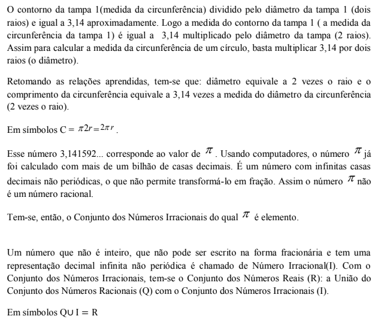
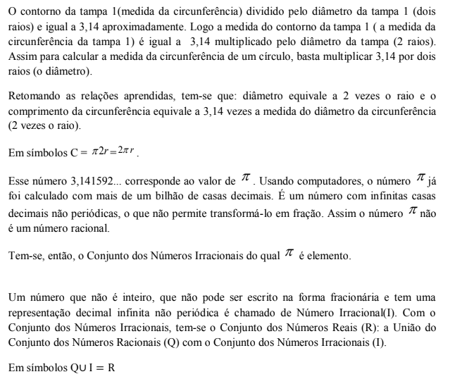

Capítulo 2
A INDÚSTRIA DA CONSTRUÇÃO CIVIL

Construção civil é o termo que engloba a confecção de obras como edifícios, pontes, barragens, fundações de máquinas, estradas, aeroportos e outras infraestruturas, emque participam arquitetos e engenheiros civis em colaboração com técnicos de outras áreas. É um dos setores do mercado produtivo que se faz presente em todos os locais. É, portanto, de grande abrangência e diversificações em suas atividades, por isso tem apresentando um grande crescimento.
Esta atividade é de grande importância pois, é geradora de emprego para a sociedade, absorve grande número de mão de obra em diversos setores, além disso, faz com que o país alcance níveis superiores com a participação no PIB e redução no déficit habitacional com a construção de novas moradias.
Em muitas dessas obras, são necessários números especiais como o número pi que estabelece a proporção entre o perímetro e o diâmetro de uma circunferência. Com esse número, é possível fazer cálculos como o da área de um círculo e o volume e a medida da superfície de uma esfera.
Um valor exato para o número pi é buscado desde a Grécia antiga – uma tarefa hercúlea, já que ele é um número irracional, que pode ser representado por infinitas casas decimais. Hoje, com a ajuda da computação, já se chegou à representação de até 5 trilhões de casas! E, quanto mais casas decimais, mais exato será o cálculo. A diferença desse número é que ele é um número decimal com infinitas casas depois da vírgula e, por mais que se encontrem outras casas decimais, não se encontra o período.
O número pi, uma constante cujo símbolo matemático é π , é utilizado na engenharia, na geologia, na astronomia, na indústria da construção civil e outros campos. Tudo que tem formato arredondado pode ter valores que dependem dessa constante. Albert Einstein usou o PI em sua fórmula que diz respeito ao espaço curvo na Teoria da Relatividade.
RETOMANDO PARA PROSSEGUIR...Até o sétimo ano conhecemos e operamos com três conjuntos numéricos: O conjunto dos Números Naturais (N), o dos Números Inteiros (Z) e o dos Números Racionais (Q). Aprendemos que os números racionais são aqueles que podem ser escritos na forma de fração e, com isso, todos os números Naturais e Inteiros são Números Racionais, estabelecendo-se, então, uma relação entre os seguintes conjuntos:

ESTUDANDO O NÚMERO π
Vamos conhecer neste capítulo um número que não é racional, portanto, um número que não pode ser escrito na forma de fração: O número Pi cujo símbolo é π
RETOMANDO CONCEITOS

 ATIVIDADE PRÁTICA
ATIVIDADE PRÁTICA
DESCOBRINDO O NÚMERO PI
 

Você sabia? Os gregos e a magia do Pi. O Foi descoberto por volta de 400 a.C. que havia alguns números que não podiam ser encontrados pela divisão de dois números inteiros. Os matemáticos os chamaram de números irracionais. Um número irracional tem uma representação decimal infinita: suas casas decimais prolongam-se para sempre. Você não consegue desenhar uma reta cujo comprimento possa ser expresso exatamente por um número irracional. Pi, a relação entre o diâmetro e a circunferência, é um número irracional. Essa é a razão de ser representado por um símbolo, π ; não podemos nunca expressar seu valor absoluto. π já foi calculado com mais de um bilhão de casas decimais por um computador, embora provavelmente nunca precisaremos deste grau de precisão. π = 3,141592...

O QUE APRENDI